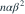
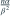

独立来自形状
独立来自形状  已知、速率
已知、速率  未知的 Gamma 分布。样本关于 的 Fisher 信息为？
未知的 Gamma 分布。样本关于 的 Fisher 信息为？- A
- B
- C

- D

我已思考，展开答案与解析
正确答案：D
- 对数似然含参数项为 。
- 负二阶导数为
 ，其期望仍为该值。
，其期望仍为该值。
易错提醒独立样本信息可以相加，但必须保留形状参数 α。
JYSG · 432精选 · 册内清华大学432·2024年·五(2)；信息量拆解；PDF第116页（印刷页114）
原题知识点延伸
独立来自形状 已知、速率 未知的 Gamma 分布。样本关于 的 Fisher 信息为？

，其期望仍为该值。JYSG · 432精选 · 册内清华大学432·2024年·五(2)；信息量拆解；PDF第116页（印刷页114）
原题知识点延伸